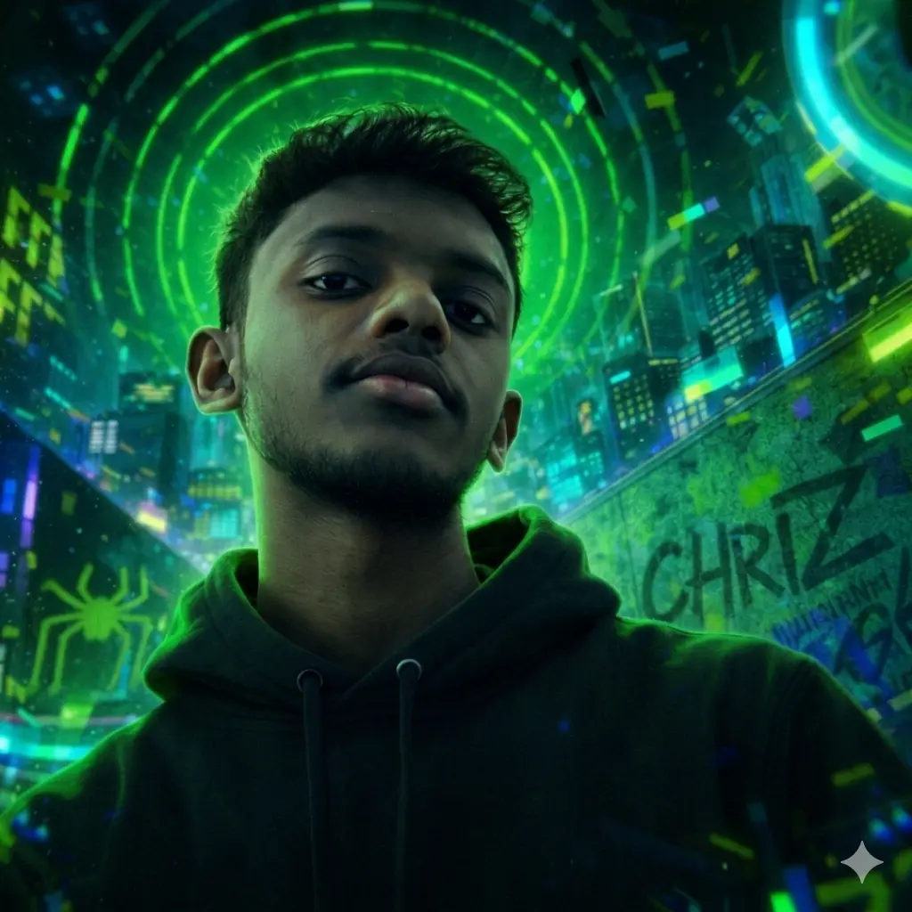

Cybersecurity
Exploring forensics, ethical hacking, and secure architectures through immersive digital protection systems.
I'm Chriz — a cybersecurity student and creative developer focused on immersive UI systems, Linux environments, AI concepts, and modern brutalist design aesthetics.

PROJECTS BUILT
AI & AUTOMATION
SYSTEMS ARCHITECTURE
A retro-brutalist portfolio inspired by cinematic dragon fantasy color grading, neon green glow aesthetics, and practical systems engineering.
Exploring forensics, ethical hacking, and secure architectures through immersive digital protection systems.
Crafting custom environments with Mint, EndeavourOS, and server-side infrastructure management.
Building multiplayer Bedrock systems, utility addons, and immersive gameplay experiences like Sky Realms SMP.
A selection of my primary security tools, automation platforms, and community systems.
A minimalist, high-performance desktop environment that unifies web applications into a single sandboxed dock.
Visit SiteAn enterprise-grade AI Resume ATS Analyzer powered by Groq Llama-3, featuring automated profile diagnostics and cover-letter generation.
View RepoA comprehensive Python-based reconnaissance tool for automated security analysis.
View RepoAn AI-powered security platform integrating automated workflows and intelligent analysis.
View RepoA thriving Minecraft Bedrock server network and community focused on immersive fantasy gameplay.
Visit SitePursuing a diploma in Cyber Forensic and Cyber Security while building immersive creative systems.
Experimenting with cinematic gradients, glowing UI systems, and tactile brutalist interactions.
Interested in cinematic UI systems, Minecraft development, or security tooling? Let's connect.
Contact Me →